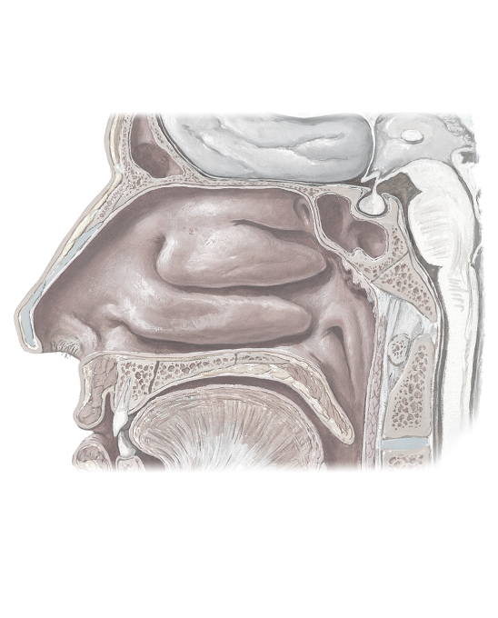

Frontal sinus
Middle nasal concha
Middle nasal meatus
Inferior nasal concha
Palatine process of maxillary bone
Horizontal plate of palatine bone
Opening of auditory tube
Soft palate
Torus tubarius
Pharyngeal tonsil (adenoid if enlarged)
Pituitary gland
Sphenoidal sinus
Superior nasal concha
1
2
3
4
5
6
7
8
9
10
11
12
13